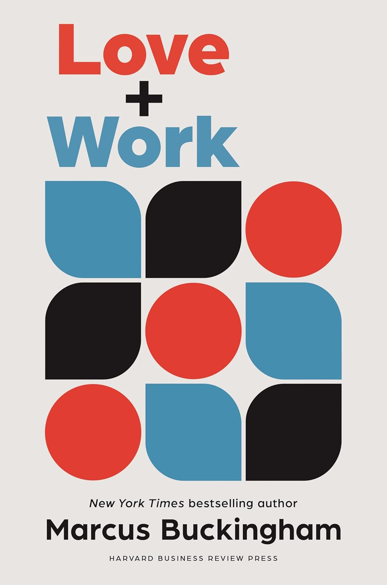

"Love + Work: How to Find What You Love, Love What You Do, and Do It for the Rest of Your Life"
- Read on 2025-03-18
- Rating: ️️️️️
- Format: 🎧 (6 hours 43 minutes)
Find the things you love. Be specific about them. Make time in your life (and job) to do those things. He has some great questions to help you identify what some of those loves might be.
"Your life is composed—at school, home, work—of many threads, many different activities, situations, people. Some of these threads are black, white, gray, brown, emotionally meager, a little up, a little down, don't do much to move the needle.
But some of them are red. Red threads are made of a very different material. They appear to be extremely positively charged. You find yourself instinctively wanting to pull on these threads. And when you do, your life feels easier, more natural, time rushes by. These thread are the source of ... your uniqueness, felt and then expressed in certain activities."
He encourages us to find those things, and even to identify where in our daily activities we're able to do some of those activities. And if you don't have time in your daily life to do those things, his research suggests things won't go well. He makes a compelling argument for that. He also goes on to make some pretty radical suggestions about how everything could incorporate what the book is about. I've yet to find (and highly doubt I'll ever find) a book that I'll fully adopt as my new way of life. This isn't the exception to that.
I liked the encouragement to find those red threads, and make sure you're getting time to do that. (And a thought that instead of saying what you're good at in an interview, to share, "When [I'm] at my best I _____.")
- Prior: Ancillary Justice
- Next: Ancillary Sword